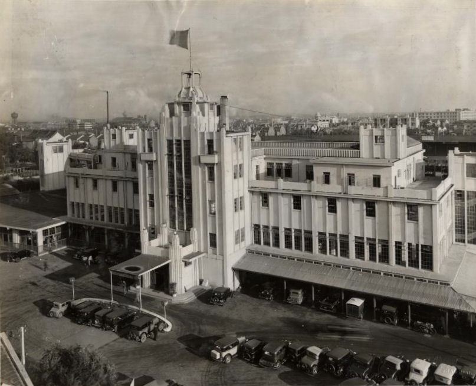

Фусин, 597. Стадиона нет, площадь есть
复兴中路597号。跑狗场没了，广场还在
«Русский Сокол» и Канидром「俄罗斯猎鹰」和逸园跑狗场
Гимнастическое общество «Русский Сокол» собралось в Шанхае весной 1930 года, 1 июня его освятил епископ Симон. 24 июня 1934 года 250 соколов выступили на Канидроме — стадионе для собачьих бегов 1928 года. Стадиона больше нет: на его месте, на Фусин, 597, с 2011 года Культурная площадь. Булавка стоит там.
体操会「俄罗斯猎鹰」1930年春在上海成立，6月1日西蒙主教祝圣。1934年6月24日，250名队员在逸园跑狗场表演——那是1928年的赛狗场。跑狗场已经没有了：原址复兴中路597号，2011年起是文化广场。钉子钉在那里。
Фусин-чжунлу, 597, у Южной Шэньси, район Хуанпу. Сейчас — Шанхайская культурная площадь (上海文化广场). Стадиона больше нет.
黄浦区复兴中路597号，近陕西南路。现在是上海文化广场。跑狗场已经没有了。

Прочитать за минуту一分钟读完
«Сокол» — гимнастическое общество. В Шанхае русская инициативная группа собралась в марте 1930 года. На первое собрание 8 апреля пришло около 120 человек.
「猎鹰」是体操会。上海的俄国发起人1930年3月聚在一起。4月8日第一次开会，来了一百二十人左右。
Узнать подробнее了解更多
Брусья и козла взяли взаймы у Шанхайского волонтёрского корпуса. 1 июня 1930 года епископ Шанхайский Симон освятил и открыл «Сокол».
24 июня 1934 года на Канидроме прошёл их большой праздник: двести пятьдесят соколов, соколок, мальчиков и девочек. Канидром — стадион для собачьих бегов. Его построили в 1928 году, трибуны на пятьдесят тысяч зрителей.
К сентябрю 1935 года в обществе было больше трёхсот членов, из них восемьдесят соколок. Девиз: «В мышцах — сила! В сердце — отвага! В мыслях — Родина!»
Стадиона больше нет. Трибуны снесли в середине 2000-х: одна страница пишет 2005-й, другая 2006-й. 23 сентября 2011 года на этом месте открыли новую Культурную площадь с театром. Фото на странице старое, 1930-х: так Канидром выглядел снаружи.
双杠和跳马是向万国商团借的。1930年6月1日，上海的西蒙主教为「猎鹰」祝圣开幕。
1934年6月24日，他们在逸园跑狗场办了大会：两百五十名男女队员和少年。逸园是赛狗场，1928年建，看台坐得下五万人。
到1935年9月，会员三百多人，其中八十名女队员。口号是：「肌肉有力量！心里有勇气！想着祖国！」
跑狗场已经没有了。看台在2000年代中期拆掉：一页写2005年，一页写2006年。2011年9月23日，这里的新文化广场开幕，里面有剧场。这一页的照片是1930年代的老照片，是逸园外面的样子。
На карте在地图上
Важно не перепутать别弄混
Канидрома больше нет: булавка стоит на Культурной площади, на его месте. Где был сам зал «Сокола», я не знаю. 120 человек — это первое собрание, не число основателей.
逸园已经没有了：钉子钉在原址上的文化广场。「猎鹰」自己的会堂在哪儿，我不知道。一百二十人是第一次开会的人数，不是创办人数。
Вопрос к месту关于这个地方的问题
Зачем эмигрантам в Шанхае был нужен гимнастический «Сокол» со своим девизом?
上海的侨民为什么需要一个有自己口号的体操会「猎鹰」？
Что установлено точно已经核对过的
Март и 8 апреля 1930, снаряды от волонтёрского корпуса, освящение 1 июня 1930, праздник 24 июня 1934, численность 1935, девиз, Канидром 1928 года, новая площадь 2011. Страницы ниже.
1930年3月和4月8日、借万国商团的器械、6月1日祝圣、1934年6月24日大会、1935年人数、口号、1928年的逸园、2011年新广场。出处在下面。
Что пока требует проверки还要再核对的
Год сноса трибун: 2005 или 2006. Современного открытого фото площади я не нашёл, поэтому стоит архивное.
拆看台是2005还是2006年。我没找到可以用的文化广场现代照片，所以放老照片。
Источники этой страницы这一页的出处
- «Русский Сокол» в Шанхае — paris1814. Собрание 8 апреля 1930, около 120 человек, снаряды от волонтёрского корпуса, освящение 1 июня 1930, праздник 24 июня 1934, 250 участников, свыше 300 членов и 80 соколок в 1935, девиз.1930年4月8日开会约120人，器械借自万国商团，6月1日祝圣，1934年6月24日大会250人，1935年三百多会员、八十名女队员，口号。
- Canidrome (Shanghai) — Wikipedia. Стадион 1928 года на 50 000 мест; трибуны снесены в 2005 или 2006.1928年建，五万座位；看台2005或2006年拆除。
- 上海文化广场 — 维基百科. Бывший Канидром 1928 года; новая площадь открыта 23 сентября 2011.前身是1928年的逸园跑狗场；2011年9月23日新广场开放。
Рядом по смыслу:意思上相邻的： Оркестр Лундстрема и «Парамаунт»伦德斯特列姆和百乐门 Шанхайский русский полк上海俄国团
Последняя правка страницы: 19 ноября 2026. Это дата правки сайта, не дата исторического события.本页最近一次修改：2026年11月19日。这是网页的修改日期，不是历史事件的日期。